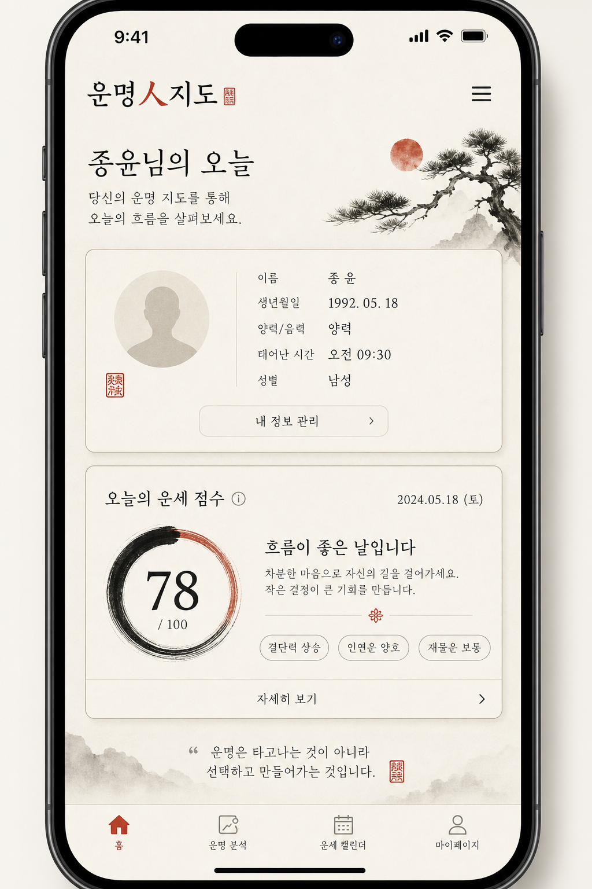
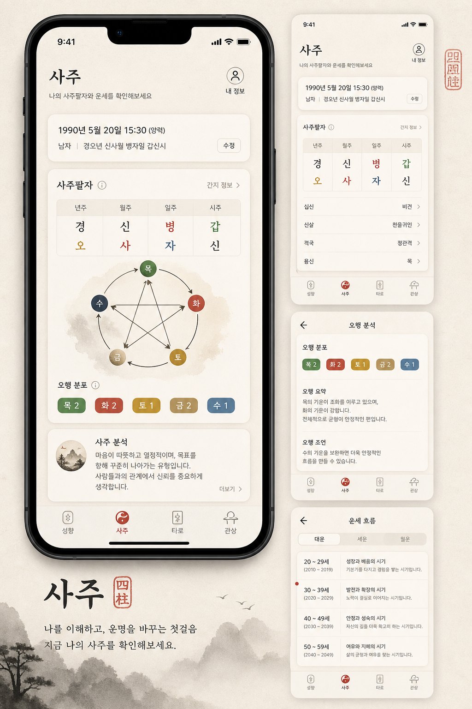
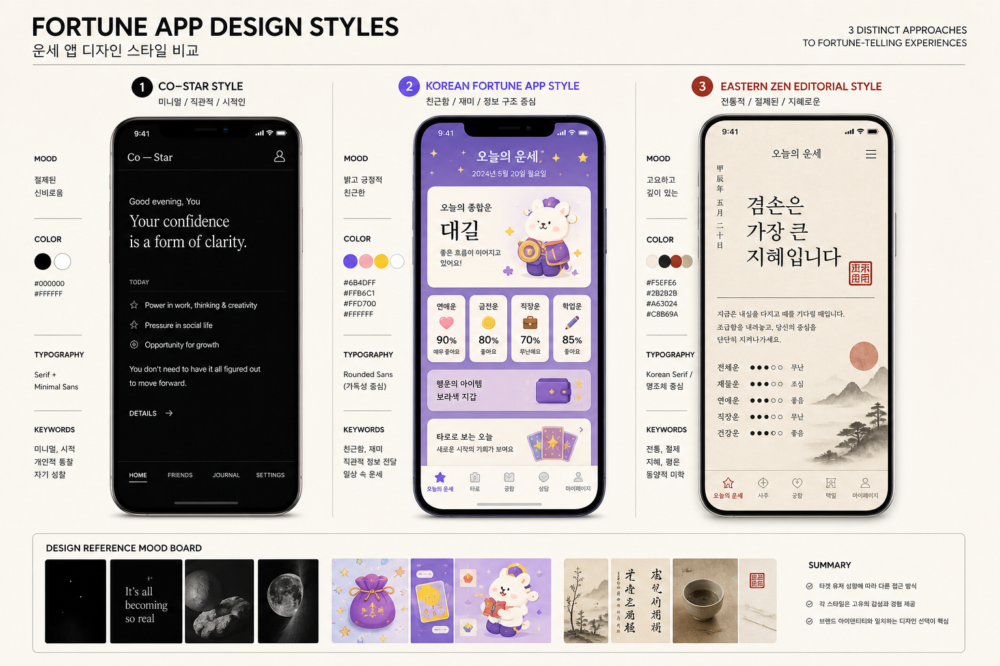

1. 추천 UI 방향 4가지
지금 앱 톤과의 궁합 + 구현 난이도 기준. ⭐ = 현재 브랜드와 가장 잘 맞음.

⭐ A. 에디토리얼 동양 미니멀 (추천)한지 배경 + 인장 적색 포인트 + 여백. 이솝·일본 에디토리얼 앱 느낌. 지금 Colors.ts와 동일 계열.
1순위신분증타이포
⭐ B. 데이터 카드 + 오행 시각화사주·타로·관상 탭에 차트·칩·레이어 카드. Apple Health식 정보 밀도 + 동양 무늬.
탭 고도화차트
C. 타이포 중심 (Co-Star식)일러스트 최소, 시적인 문장·큰 글자·다크모드. 젊은 층 친화적이나 동양 정체성은 약해짐.
참고만카피오늘의 운세 ✨
대길 🎉
연애운 UP!
타로
사주
점신·포스텔러 계열 (비추천)
보라·금색·일러스트·배너. 전환율은 높지만 운명人지도 브랜드와 충돌. 요소만 참고.
한국 시장 참고
결론: A(에디토리얼) + B(데이터 카드) 조합이 가장 자연스럽습니다.
C는 운세 문구·헤드라인 톤만, D는 카드 그리드·온보딩 흐름만 빌려오세요.
2. 앱·서비스 레퍼런스
직접 베끼기보다 “이 앱에서 뭘 가져올지” 기준으로 정리.
| 앱/서비스 | 가져올 요소 | 피할 요소 | 우리 앱 적용 |
|---|---|---|---|
| Co-Star | 시적인 헤드라인, 여백, 다크모드 타이포 | 완전 흑백·서양 점성술 톤 | IntegratedFortune 헤드라인·요약 문장 스타일 |
| The Pattern | 타임라인·사이클 카드, 친구 비교 | 영문 중심 UX | “이번 주 흐름” 섹션 (2차) |
| CHANI | 따뜻한 팔레트, 여성향 타이포 | 파스텔 과다 | 성향 탭 톤앤매너 |
| 점신 / 포스텔러 | 탭 구조, 콘텐츠 허브, 잠금→해제 흐름 | 보라 그라데이션, 과한 일러스트 | LockedFortune → 열림 패턴 (이미 유사) |
| 헬로우봇 | 캐릭터 친근함, 대화형 온보딩 | 챗봇 UI 전면 | 관상 위저드 대화 톤 (선택) |
| Apple Health | 링 차트, 인사이트 칩, 카드 섹션 | 의료 UI 느낌 | ScoreRing·InsightChips 고도화 |
| 지갑/신분증 앱 | ID 카드 비율, 필드 탭 편집, 증명사진 프레임 | 정부 UI 딱딱함 | IdentityCard 레이아웃·테두리 |
| 이솝(Aesop) / 무인양품 | 여백, 절제된 색, 고급 종이 질감 | 웹 중심 | 전체 브랜드 톤 (배경·카드 질감) |
디자인 갤러리 (스크린샷 모음)
3. 화면별 고도화 체크리스트
8월 10일 월
종윤님의 오늘
이름 · 생년월일
MBTI · 별자리
오늘의 종합 운세
78
차분히 결정하면 좋은 날
신분증+운세 수직 흐름 → 카드 간격·섹션 라벨 통일. 히어로에 오늘 날짜+한 줄 인사 강화.
신분증 IdentityCard
증명사진 비율(7:9) 유지. 테두리=프로필 완성도 색 변화(이미 구현). 인장 스탬프·한지 텍스처 배경 추가 검토.
지갑앱 참고
종합 운세 IntegratedFortune
ScoreRing → 오행 색 링 또는 사주 기운 그래프. InsightChips → 카테고리별(연애·재물·건강) 분리.
Health 앱
탭 허브 SectionHub
“준비 중” 리스트 → 아이콘+미니 프리뷰 카드 그리드. 사주=팔자표, 타로=카드 뒷면, 관상=부위 맵.
콘텐츠 허브
관상 위저드
단계 인디케이터, 큰 미리보기, 부위별 일러스트. → 아바타 샘플 참고.
Avataaars식
타이포·색
제목=조선궁서(ChosunGs), 본문=산세리프. 적색은 CTA·인장·강조만. 보라 그라데이션 금지(현행 유지).
브랜드4. 디자인 토큰 제안 (현행 확장)
| 토큰 | 현재 | 제안 | 용도 |
|---|---|---|---|
| background | #F3EEE6 | + 미세 노이즈 텍스처 | 한지 느낌 |
| tint / seal | #B23A2F | 유지 | CTA·인장·완성 테두리 |
| card | #EAE3D8 | elevation shadow 추가 | 카드 떠있는 느낌 |
| radius | 혼재 | 12 / 16 / 20 통일 | 카드·모달 |
| spacing | 16~28 | 8pt 그리드 (8·16·24·32) | 전체 |
| 오행색 | 없음 | 목#4a7c59 화#c45c4a 토#c9a227 금#9a9a9a 수#4a6fa5 | 사주·칩 |
5. 추천 로드맵
| 단계 | 작업 | 효과 |
|---|---|---|
| 1단계 (빠름) | spacing·radius·섹션 라벨 통일, 카드 그림자, LockedFortune 애니메이션 | 전체 완성도 ↑ |
| 2단계 | IntegratedFortune 카테고리 칩·오행 링, SectionHub 아이콘 카드 | 정보 밀도·시각화 |
| 3단계 | 신분증 한지 텍스처·인장 스탬프, 관상 아바타 레이어(2안) | 브랜드 차별화 |
| 4단계 (선택) | 다크모드 폴리시, 마이크로 인터랙션(탭·위저드 전환) | 프리미엄 느낌 |
샘플링 순서: 이 페이지에서 방향 고르기 →
프로필 아바타에서 캐릭터 톤 고르기 →
마음에 드는 조합 알려주시면 1단계부터 코드 반영.